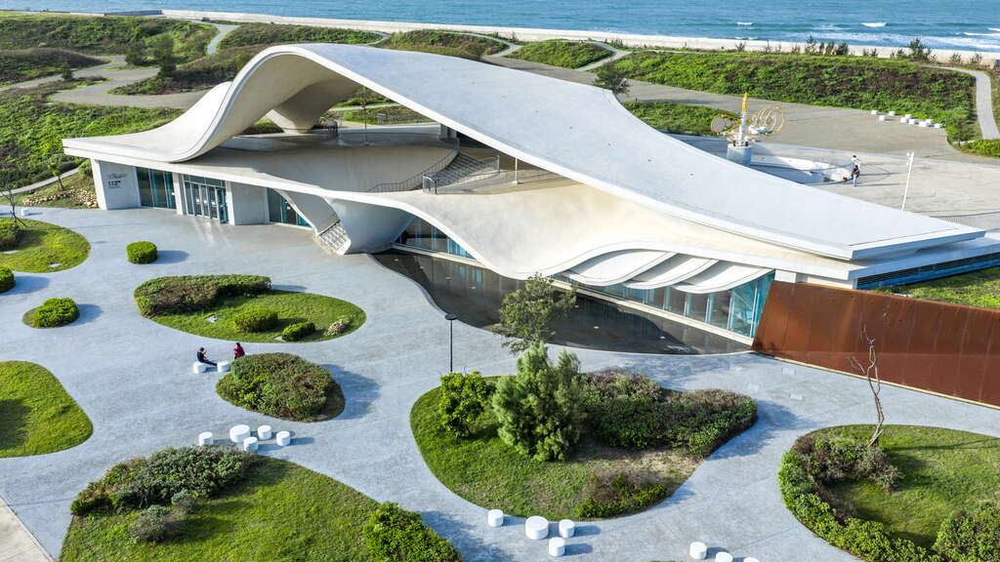
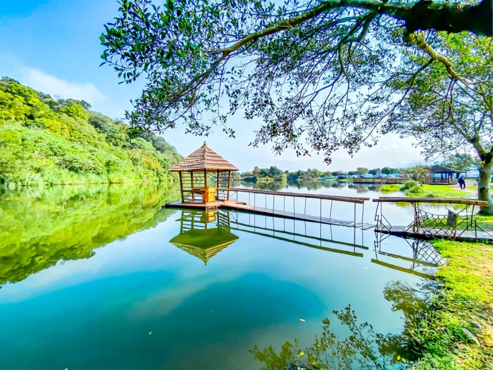
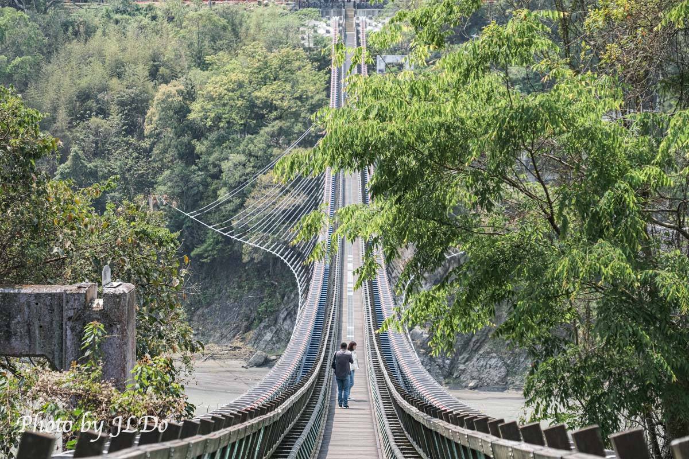

Coastal · 01

許厝港濕地
濕地、鳥影與開闊天空，是這趟海線旅行最安靜的開場。
每個景點各自不大，串在一起卻能形成有濕地、沙丘、燈塔、漁港、山林、古橋與湖畔咖啡的完整一日。
從濕地、沙丘到燈塔、綠廊，最後等永安漁港的夕陽——桃園海線的特色一次走完。
濕地、鳥影與開闊天空，是這趟海線旅行最安靜的開場。

風紋、沙丘與海線同框，視野遼闊，照片也很有辨識度。

百年燈塔讓路線從自然風景延伸到歷史建築，是很好的中段停靠點。

漁市、觀海橋與海螺造型園區集中在一起，是海線最佳的夕陽景點，金色海面與漁港剪影同框。

午後用綠蔭與自行車把步調放慢，讓整天不只有拍照，也有舒服移動。

就在永安漁港周邊，時間允許的話可以順路停留，替漁港段加上一點建築與海洋主題。
從龍潭一路走進復興山區，桃園的山林、古橋與湖畔咖啡換成另一種旅行氣氛。

龍潭山下的生態公園，水塘、草地與紅磚老屋讓人立刻安靜下來。

百年紅磚拱橋藏在田間，是山線最有故事感的停靠點。

復興區的賞景平台，遠眺溪谷與山稜，能感覺到桃園另一種空氣。

復興區的湖畔景觀咖啡館，是山線的最後一站。坐下來點杯咖啡、配點輕食，替整天的山林氣息畫下完美句點。

大平紅橋後步行 5 分鐘可達，是山線午餐的核心區，客家小吃集中、適合放慢速度散步。